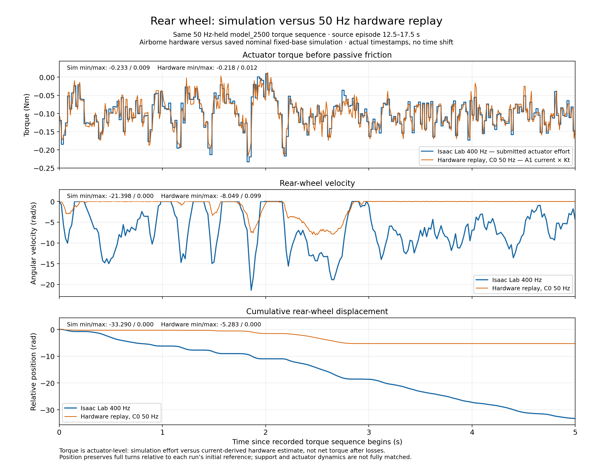
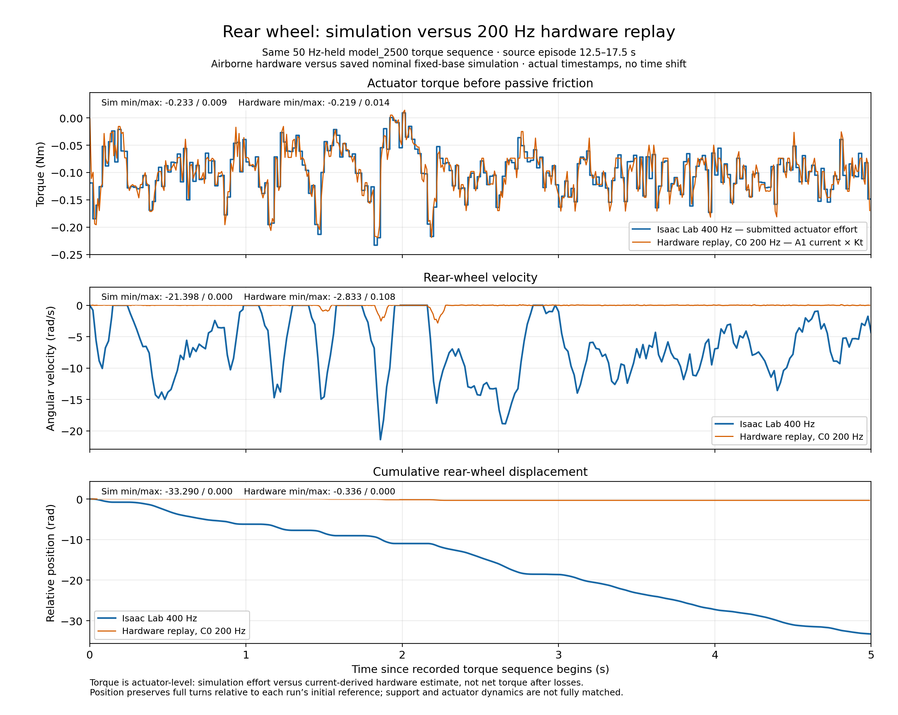

Same 50 Hz-held torque sequence. Three panels: actuator-level torque, velocity, and cumulative position. Blue: Isaac Lab 400 Hz. Orange: hardware. No fitted time shift, smoothing or position-bias correction.
Torque is submitted simulation effort versus A1 current × Kt, before passive losses; hardware torque is an estimate. Support and plant dynamics are not fully matched.


Methods and limitations · Plotted samples · Statistics and provenance